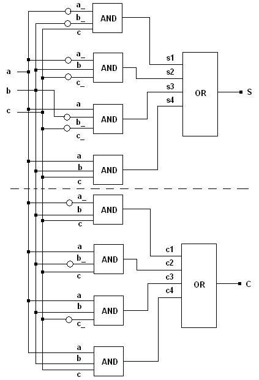
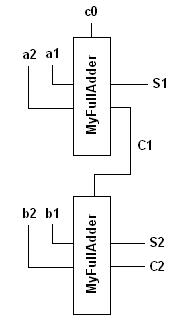

The following is the list of examples currently availble. Each of these examples is presented along with well documented code snippets. You can copy paste the code as it is to build working applications. Help on building applications using libLCS is available at Installing and Building Applications Using libLCS.
1. 1-bit Full-Adder - A gate-level realisation
2. Defining a gate level module for a 1-bit Full-Adder
3. Functional realisation of a 1-bit Full-Adder
a | b | c | S | C ---|-----|-----|---------|---- 0 | 0 | 0 | 0 | 0 ---|-----|-----|---------|---- 0 | 0 | 1 | 1 | 0 ---|-----|-----|---------|---- 0 | 1 | 0 | 1 | 0 ---|-----|-----|---------|---- 0 | 1 | 1 | 0 | 1 ---|-----|-----|---------|---- 1 | 0 | 0 | 1 | 0 ---|-----|-----|---------|---- 1 | 0 | 1 | 0 | 1 ---|-----|-----|---------|---- 1 | 1 | 0 | 0 | 1 ---|-----|-----|---------|---- 1 | 1 | 1 | 1 | 1

#include <lcs/or.h> #include <lcs/and.h> #include <lcs/not.h> #include <lcs/tester.h> // All classes of the libLCS are defined in the namespace lcs. using namespace lcs; int main(void) { // Creating a single line bus for each 'node' in the above circuit. // Note that Bus is a class template from which a single line class Bus<1> // is being initialised using the default template parameter. The // busses a_, b_ and c_ each denote the busses at the outputs of the // NOT gates of the corresponding input data busses. Bus<> a, b, c, a_, b_, c_, S, C, s1, s2, s3, s4, c1, c2, c3, c4; // Initialising NOT gates which obtain the inverses of the input busses. Not n1(a_, a), n2(b_, b), n3(c_, c); // Initialising an AND gate for each of the 4 min-terms involved. Each // AND should take 3 input data lines. Hence, the class And<3> is used. // Moreover, the input busses to these AND gates should have 3 lines each. // Hence, the 3 line input busses are generated using the overloaded // '*' operator. The '*' does not denote a multiplication (or a logical AND), // but is a bus/line concatenation operator. It concatenates two busses // to produce another bus which contains lines from both the operand busses. And<3> sa1(s1, a_*b_*c), sa2(s2, a_*b*c_), sa3(s3, a*b_*c_), sa4(s4, a*b*c); And<3> ca1(c1, a_*b*c), ca2(c2, a*b_*c), ca3(c3, a*b*c_), ca4(c4, a*b*c); // The 4 input OR gates which take the outputs of the AND gates and produce the // desired results. Or<4> so(S, s1*s2*s3*s4), co(C, c1*c2*c3*c4); // A tester object which takes a 3 line input bus and a 2 line output bus. // The 3 line input bus is generated as c*b*a and not as a*b*c as the // concatenation operator concatenates the lines from the right operand (of // the operator '*') into the MSB bits of the resultant bus object. The // ouput bus is generated as C*S for the same reason. Tester<3, 2> tester(c*b*a, C*S); // Running the tester object. The lcs::Tester::run function feeds all possible // combinations to the input bus and obtains the result from the output bus. // The result is displayed in a tabulated format on the stdout device. tester.run(); return 0; }

The 1-bit full-adder module should be built using logic gates. The code is as follows.
#include <lcs/or.h> #include <lcs/and.h> #include <lcs/not.h> #include <lcs/tester.h> // All classes of the libLCS are defined in the namespace lcs. using namespace lcs; // Define a class MyFullAdder. This is our 1-bit full-adder module. class MyFullAdder { public: // The constructor should take single line Bus<1> objects as inputs, one each for // the two data lines, carry input, sum output and the carry output. MyFullAdder(const Bus<1> &S, const Bus<1> &Cout, const Bus<1> &A, Bus<1> &B, Bus<1> &Cin); // The destructor. ~MyFullAdder(); private: // a, b, c are the two data inputs and the carry input respectively. Bus<1> a, b, c; // s is the sum output, and cout is the carry output. Bus<1> s, cout; // A pointer member for each of the gates which constitute our FullAdder. // The number and type of the gates is same as in the 1st example above. Not *n1, *n2, *n3; And<3> *sa1, *sa2, *sa3, *sa4; And<3> *ca1, *ca2, *ca3, *ca4; Or<4> *so, *co; }; MyFullAdder::MyFullAdder(const Bus<1> &S, const Bus<1> &Cout, const Bus<1> &A, Bus<1> &B, Bus<1> &Cin) : a(A), b(B), c(Cin), s(S), cout(Cout) { Bus<> a_, b_, c_, s1, s2, s3, s4, c1, c2, c3, c4; // Each of the gates should be initialised with proper bus connections. // The connections are same as in the 1st example above. n1 = new Not(a_, a); n2 = new Not(b_, b); n3 = new Not(c_, c); // Initialising the NOT gates. sa1 = new And<3>(s1, a_*b_*c); sa3 = new And<3>(s3, a*b_*c_); // Initialising the AND gates for the sa2 = new And<3>(s2, a_*b*c_); sa4 = new And<3>(s4, a*b*c); // minterms corresponding to the sum output. ca1 = new And<3>(c1, a_*b*c); ca2 = new And<3>(c2, a*b_*c); // Initialising the AND gates for the ca3 = new And<3>(c3, a*b*c_); ca4 = new And<3>(c4, a*b*c); // minterms corresponding to the sum output. so = new Or<4>(s, s1*s2*s3*s4), co = new Or<4>(cout, c1*c2*c3*c4); // Initialising the OR gates which // generate the final outputs. } MyFullAdder::~MyFullAdder() { // The destructor should delete each of the gates // which were initialised during construction. delete n1; delete n2; delete n3; delete sa1; delete sa2; delete sa3; delete sa4; delete ca1; delete ca2; delete ca3; delete ca4; delete so; delete co; } int main(void) { Bus<> a1, b1, a2, b2, c0, S1, C1, S2, C2; MyFullAdder fa1(S1, C1, a1, a2, c0), fa2(S2, C2, b1, b2, C1); c0 = LOW; // The first carry input should be set to LOW (or 0). Tester<4, 3> tester(a1*b1*a2*b2, S1*S2*C2); tester.run(); return 0; }
#include <lcs/or.h> #include <lcs/and.h> #include <lcs/not.h> #include <lcs/tester.h> // All classes of the libLCS are defined in the namespace lcs. using namespace lcs; // Define a class MyFullAdder. This is our 1-bit full-adder module. class MyFullAdder { public: // The constructor should take single line Bus<1> objects as inputs, one each for // the two data lines, carry input, sum output and the carry output. MyFullAdder(const Bus<1> &S, const Bus<1> Cout, const InputBus<1> &A, const InputBus<1> &B, const InputBus<1> &Cin); // Destructor. // ~MyFullAdder(); // This function propogates the input data line states to the output. // Binary 1-bit addition is performed on the line states of input busses // and the result is propogated to the output busses. virtual void propogate(); private: Bus<1> s, cout; InputBus<1> a, b, c; }; MyFullAdder::MyFullAdder(const Bus<1> &S, const Bus<1> Cout, const InputBus<1> &A, const InputBus<1> &B, const InputBus<1> &Cin) : Module(), s(S), cout(Cout), a(A), b(B), c(Cin) { // A functional module has to be driven by the data lines of the input busses. // In order to be driven, a module has to register itself with each of the input // busses using the drive function. If not registered, a change to the state of the data // lines of an input bus will not trigger the module to propogate the change and produce // the output. a.drive(this); b.drive(this); c.drive(this); } MyFullAdder::~MyFullAdder() { // When a module ceases to exist anylonger, it should notify its input busses to stop triggering // it. This is done using the unDrive function. If not de-registered in this way, the input busses // will try to drive a non existant module, resulting in a segmentation fault. a.unDrive(this); b.unDrive(this); c.unDrive(this); } void MyFullAdder::propogate(void) { // The sum and carry outputs are calculated using the overloaded bitwise operators // rather than through an ensemble of logics gates. LineState sum = (!a[0] & !b[0] & c[0]) | (!a[0] & b[0] & !c[0]) | (a[0] & !b[0] & !c[0]) | (a[0] & b[0] & c[0]) , carry = (!a[0] & b[0] & c[0]) | (a[0] & !b[0] & c[0]) | (a[0] & b[0] & !c[0]) | (a[0] & b[0] & c[0]) ; s[0] = sum; cout[0] = carry; } int main(void) { Bus<> a1, b1, a2, b2, c0, S1, C1, S2, C2; MyFullAdder fa1(S1, C1, a1, a2, c0), fa2(S2, C2, b1, b2, C1); c0 = LOW; // The first carry input should be set to LOW (or 0). Tester<4, 3> tester(a1*b1*a2*b2, S1*S2*C2); tester.run(); return 0; }
1.4.7